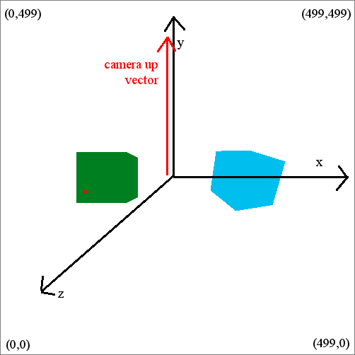
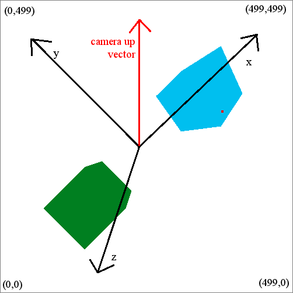

One of the excercises young Jedi must go through in Jedi acedemy training is flying and shooting on a special training machine. Now Luke Skywalker has to examine the results of this training. He wants to know whether the pilots hit something or not.
Problem specification
You are given a description of several models of combat ships. Each model is a set of triangles in 3D space. All models are sane (they have a reasonable structure, they are not just random triangles).
The 3D scene consists of several ships called objects. Each object is one of the models, rotated around some axis and moved into some position. The objects are disjoint.
We took snapshots of the scene from several different positions and angles. Each snapshot is described by the camera position (a point), the camera look direction (a vector) and the camera up vector (the direction that will be “up” on the snapshot). Each camera uses a standard perspective projection with a field of view 90 degrees. (Field of view is the angle between the left and right boundary of view, and also the angle between up and down boundary of view. The camera look direction passes through the center of the snapshot.)
The entire scene seen by the camera is projected onto a square screen with fixed dimensions 500 × 500 pixels. Its lower left corner has coordinates (0,0), its upper right corner has coordinates (499,499).
At the moment of the snapshot, a laser shot was taken from the position of the camera, passing through the point (x,y) on the screen. Your should find whether an object is hit by the shot. If yes, find the closest such object (that is the one actually hit). You may assume that the shot is never on the object boundary (all neighbouring pixels of the snapshot will always correspond to the same object).
Input specification
First line of the input contains an integer m (1 ≤ m ≤ 10), the number of ship models. A description of m models follows. First line of the i-th description contains an integer pi (4 ≤ pi ≤ 50,000), the number of points on the model boundary. Next pi lines contain coordinates of points – three floating point numbers xij,yij,zij. The next line of a description contains the number ti (4 ≤ ti ≤ 50,000), the number of triangles forming the boundary of the model. Each of the last ti lines describes one triangle using three zero-based indices of points (each number is an integer between 0 and pi - 1, inclusive).
After all model descriptions, the next line contains an integer o (1 ≤ o ≤ 5,000), the number of objects. Next, o object descriptions follow. The object description starts by a number mi (0 ≤ mi < m), model number which is used for the object. The next line contains a description of a rotation of the model. It starts by three floating point numbers xir,yir,zir – the vector specifying the rotation axis. (Always at least one of the numbers is non-zero.). These are followed by a floating point number air – the angle of the rotation in degrees. The rotation follows the right-hand rule, so if the vector (xir,yir,zir) points toward you, the rotation will be counterclockwise from your point of view. The rotation axis always passes through (0,0,0). The last line of an object description is the object position, three floating point numbers xip,yip,zip. These numbers are added to the coordinates of all points in the model after the rotation (i.e., first we rotate the model, then we translate it).
The next line contains the number v (1 ≤ v ≤ 10,000) of snapshots. Each snapshot is described on four lines. The first line contains the camera position, three floating point numbers. The second line contains the camera look direction, three floating point numbers. The third line contains the camera up vector, three floating point numbers. This vector is always perpendicular to the look direction. The fourth line contains the pixel hit by the shot, two integers cx,cy (0 ≤ cx,cy < 500).
Output specification
For each snapshot you should output one number. Either the number of an object hit by the laser shot (object numbers are zero-based), or the number -1, if there is no such object.
Example
Here is the picture of the first snapshot
(the red point represents the click):

And the picture of the second snapshot:
